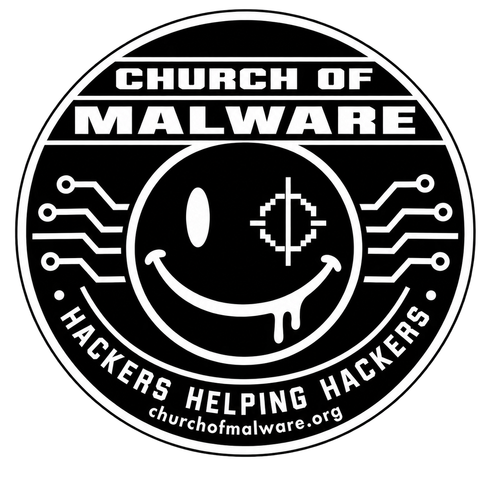

Beginner
RE for beginners with SPECTRA
35 chapters · 96 PDF pages · 27,080 words

Two levels. One workbench. Learn to explain what the bytes mean and back it up with evidence.
35 chapters · 96 PDF pages · 27,080 words
25 chapters · 107 PDF pages · 32,192 words
Start with SPECTRA’s built-in demos. For the added data, firmware, and comparison exercises, use this small benign practice pack. No malware is bundled. Exact hashes and fixture licensing are included.
Start with the beginner foundations, then follow the Windows, Linux, and ARM cases. The intermediate manual builds on that work with reproducible experiments, structures, indirect control flow, process models, recovery, and managed-client investigations.
This edition integrates APK/DEX investigation, routine history, persistent recordings, selective evidence bundles, exact address mapping, saved lessons and all 57 stages across eight CTF campaigns. Read at your own pace. The beginner book starts at page one; the intermediate book takes the same evidence further.
The beginner book adds a readiness route and an introduction to reconstructed images and virtual instructions. The intermediate book now walks through Black Loom (007) and Puppet Core (008), including bounded reconstruction, rebasing, interpreter dispatch, virtual state, branch recovery and failure analysis. The practice pack includes their exact public files.